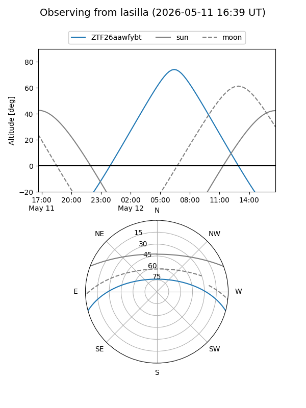
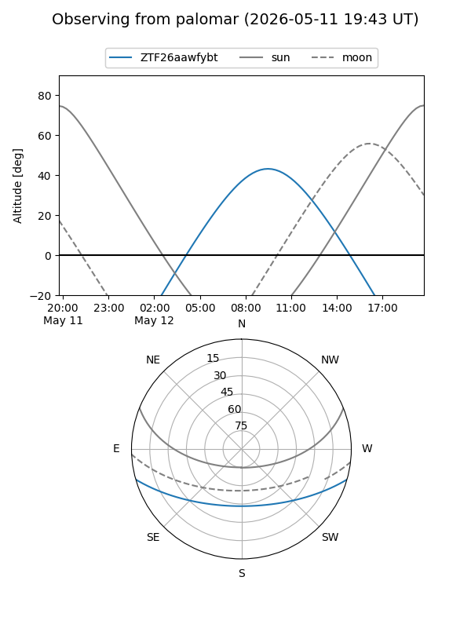

ZTF26aawfybt
Target ZTF26aawfybt at 2026-05-12 09:15
Aliases and brokers:
FINK: link
Lasair: link
ALeRCE: link
alt names
ZTF26aawfybt (ztf,fink_ztf)
Coordinates:
equatorial (ra, dec) = 255.1240,-13.37549
equatorial (HMS+DMS) = 17:00:29.76,-13:22:31.77
galactic (l, b) = (7.3445,+17.30592)
Flags:
Photometry:
last ztfg=19.80
1 ztfg detections
Lightcurve
Visibility


Additional plots